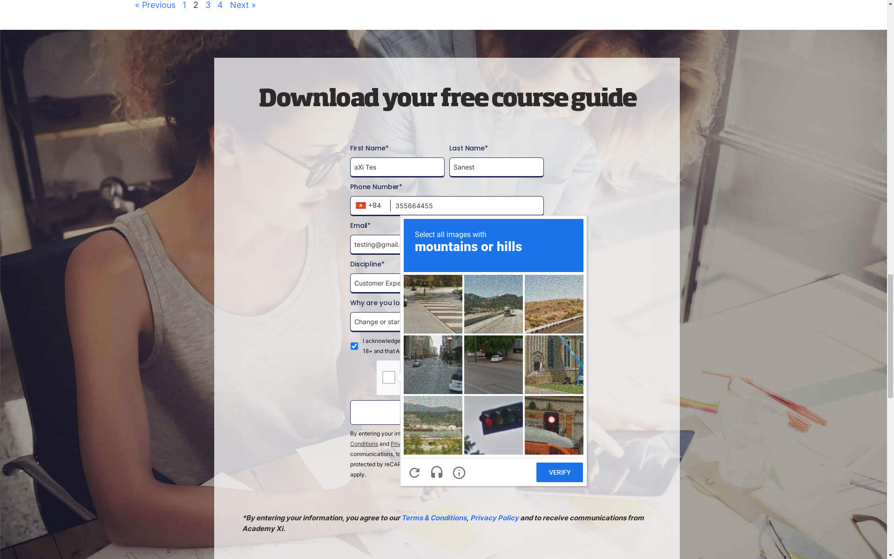

Report generated on 02-Nov-2022 at 08:24:53 by pytest-html v3.1.1
| BUILD_ID | 18 |
| BUILD_NUMBER | 18 |
| BUILD_TAG | jenkins-smoke_test-18 |
| BUILD_URL | http://13.210.111.169:8080/job/smoke_test/18/ |
| CI | true |
| EXECUTOR_NUMBER | 0 |
| JENKINS_URL | http://13.210.111.169:8080/ |
| JOB_NAME | smoke_test |
| Module Name | Verify Academyxi Web |
| NODE_NAME | built-in |
| Packages | {"pluggy": "1.0.0", "py": "1.11.0", "pytest": "7.1.3"} |
| Platform | Linux-5.15.0-1022-aws-x86_64-with-glibc2.29 |
| Project Name | Academyxi Web |
| Python | 3.8.10 |
| Tester | Binh |
| WORKSPACE | /var/lib/jenkins/workspace/smoke_test |
2 tests ran in 43.84 seconds.
(Un)check the boxes to filter the results.
1 passed, 0 skipped, 1 failed, 0 errors, 0 expected failures, 0 unexpected passes| Result | Test | Duration | Links |
|---|---|---|---|
| No results found. Try to check the filters | |||
| Failed | test_main_flow.py::Test_001_Demo::test_001_download_course_guide | 40.13 | |
|
 self = <testCases.test_main_flow.Test_001_Demo object at 0x7f3c9bb40430> @pytest.mark.sanity @pytest.mark.regression @pytest.mark.smoke def test_001_download_course_guide(self): self.logger.info("Test_001_main_flow") self.logger.info("Started Go To Home page") self.driver.get(self.baseURL) self.basePage = BasePage(self.driver) self.basePage.verify_text_element_should_be_displayed('a','Discover your learning path') self.basePage.verify_text_element_should_be_displayed('a', 'Upskill your organisation') self.homePage = HomePage(self.driver) self.homePage.click_enroll_a_course_button() self.basePage.verify_text_element_should_be_displayed('span', 'Academy Xi’s expert-led courses and workshops are designed to help you learn, practice and embed new knowledge, preparing you to shape your career and change the world.') self.basePage.verify_course_item_should_be_displayed('Data Analytics Pro') self.homePage.click_page_number('2') > self.homePage.download_course_guide('aXi Tes', 'Sanest', '355664455', 'testing@gmail.com','React', 'Change or start a new career') testCases/test_main_flow.py:33: _ _ _ _ _ _ _ _ _ _ _ _ _ _ _ _ _ _ _ _ _ _ _ _ _ _ _ _ _ _ _ _ _ _ _ _ _ _ _ _ pageObjects/HomePage.py:72: in download_course_guide self.scroll_into_locator(self.download_button_xpath) wrapper/BasePage.py:63: in scroll_into_locator self.wait_element_presence(locator) wrapper/BasePage.py:210: in wait_element_presence WebDriverWait(self.driver, 20).until(EC.element_to_be_clickable((By.XPATH, locator))) _ _ _ _ _ _ _ _ _ _ _ _ _ _ _ _ _ _ _ _ _ _ _ _ _ _ _ _ _ _ _ _ _ _ _ _ _ _ _ _ self = <selenium.webdriver.support.wait.WebDriverWait (session="58fffbf4f3f4c6222a5aadea835b86f4")> method = <function element_to_be_clickable.<locals>._predicate at 0x7f3c9ba745e0> message = '' def until(self, method, message: str = ""): """Calls the method provided with the driver as an argument until the \ return value does not evaluate to ``False``. :param method: callable(WebDriver) :param message: optional message for :exc:`TimeoutException` :returns: the result of the last call to `method` :raises: :exc:`selenium.common.exceptions.TimeoutException` if timeout occurs """ screen = None stacktrace = None end_time = time.monotonic() + self._timeout while True: try: value = method(self._driver) if value: return value except self._ignored_exceptions as exc: screen = getattr(exc, 'screen', None) stacktrace = getattr(exc, 'stacktrace', None) time.sleep(self._poll) if time.monotonic() > end_time: break > raise TimeoutException(message, screen, stacktrace) E selenium.common.exceptions.TimeoutException: Message: E Stacktrace: E #0 0x55fe4fefc2c3 <unknown> E #1 0x55fe4fd0583a <unknown> E #2 0x55fe4fd3e985 <unknown> E #3 0x55fe4fd3eb61 <unknown> E #4 0x55fe4fd76d14 <unknown> E #5 0x55fe4fd5cf6d <unknown> E #6 0x55fe4fd74a50 <unknown> E #7 0x55fe4fd5cd63 <unknown> E #8 0x55fe4fd317e3 <unknown> E #9 0x55fe4fd32a21 <unknown> E #10 0x55fe4ff4a18e <unknown> E #11 0x55fe4ff4d622 <unknown> E #12 0x55fe4ff30aae <unknown> E #13 0x55fe4ff4e2a3 <unknown> E #14 0x55fe4ff24ecf <unknown> E #15 0x55fe4ff6e588 <unknown> E #16 0x55fe4ff6e706 <unknown> E #17 0x55fe4ff888b2 <unknown> E #18 0x7f6ab18c3609 <unknown> /usr/local/lib/python3.8/dist-packages/selenium/webdriver/support/wait.py:90: TimeoutException -------------------------------Captured log setup------------------------------- INFO WDM:logger.py:11 ====== WebDriver manager ====== INFO WDM:logger.py:11 Get LATEST chromedriver version for google-chrome 106.0.5249 INFO WDM:logger.py:11 Driver [/var/lib/jenkins/.wdm/drivers/chromedriver/linux64/106.0.5249/chromedriver] found in cache -------------------------------Captured log call-------------------------------- INFO root:test_main_flow.py:22 Test_001_main_flow INFO root:test_main_flow.py:23 Started Go To Home page INFO root:BasePage.py:93 Verifying element '//a[text()='Discover your learning path']' is present. INFO root:BasePage.py:75 Element '//a[text()='Discover your learning path']' is present. INFO root:BasePage.py:93 Verifying element '//a[text()='Upskill your organisation']' is present. INFO root:BasePage.py:75 Element '//a[text()='Upskill your organisation']' is present. INFO root:BasePage.py:93 Verifying element '//span[text()='Academy Xi’s expert-led courses and workshops are designed to help you learn, practice and embed new knowledge, preparing you to shape your career and change the world.']' is present. INFO root:BasePage.py:75 Element '//span[text()='Academy Xi’s expert-led courses and workshops are designed to help you learn, practice and embed new knowledge, preparing you to shape your career and change the world.']' is present. INFO root:BasePage.py:93 Verifying element '//div[@data-name-courses= 'Data Analytics Pro']' is present. INFO root:BasePage.py:75 Element '//div[@data-name-courses= 'Data Analytics Pro']' is present. | |||
| Passed | test_frequent_failures.py::Test_001_Frequent_Failures::test_002_frequent_failures_on_blog_page | 3.20 | |
|
-------------------------------Captured log setup------------------------------- INFO WDM:logger.py:11 ====== WebDriver manager ====== INFO WDM:logger.py:11 Get LATEST chromedriver version for google-chrome 106.0.5249 INFO WDM:logger.py:11 Driver [/var/lib/jenkins/.wdm/drivers/chromedriver/linux64/106.0.5249/chromedriver] found in cache -------------------------------Captured log call-------------------------------- INFO root:test_frequent_failures.py:37 Test_002_frequent_failures_on_blog_page INFO root:test_frequent_failures.py:38 Started Go To Blog page INFO root:BlogPage.py:19 There are 12 articles on Blog Page | |||